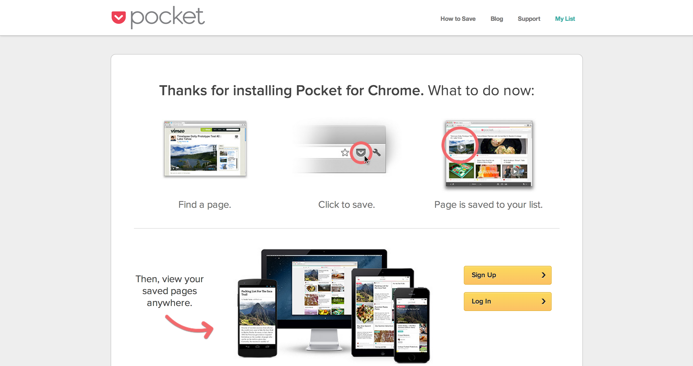
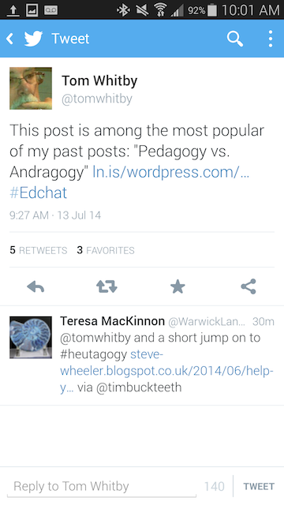
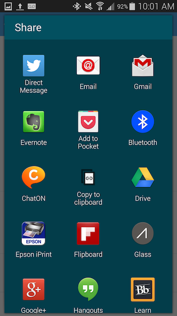
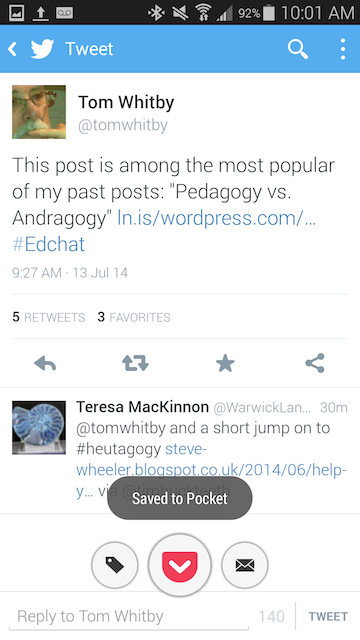
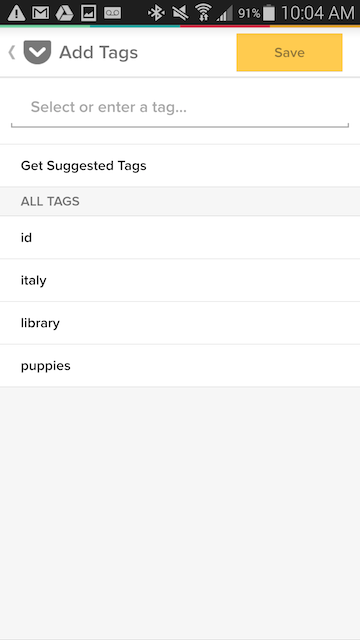

Pocket is one of many available "read it later" productivity apps that are currently available. Pocket has been around since 2006 and was first called Read It Later before changing to Pocket in 2012.
Pocket is similar to Evernote, Instapaper and Readability. It is an add-on that allows you to save all the things that you run across while you are online. Pocket is available as an extension for the Chrome, Firefox and Safari browsers. If you are using a different browser you can install the bookmarklet.
Integrated read it later apps are useful workflow tools for when you do not want to change your current focus but want to remember something. In one click, or in a click and tag you can file your distraction away for later and move on with your current work. Much like other tools you can view what you have saved from any of your devices but one of the benefits of Pocket is that you can also access what you have saved while you are offline. Audio and video are not yet availbale in offline mode but they are slated for development.
Installing the Pocket extension for Chrome was very easy, you can sign up with your Google credentials or you can use your email address to create an account. I found that the integration across all my devices was the very best out of any app I have ever installed. I was ask upone initial installation if I wanted Pocket installed on my phone, I clicked yes and the install there was immediate.

To use Pocket:
Here is a tweet that I want to save to pocket.

I just click on the share icon and select Pocket from all the choices.

Once I select Pocket we are returned to the previous screen and at the bottom you can see the Pocket icon.

You can click on the tag to the left of the Pocket icon to tag your newly save item if you wish.

If you are not already using Evernote or some other tool, I would say that Pocket is an easy-to-use read it later application. However, I will not be using it. I do not know if Pocket has some sort of deal with YouTube but, in the introductory tutorial, Pocket has a pop-up window that insists that you save a YouTube video. As far as I can tell, there is absolutely no way to get rid of this message without saving a YouTube video to your Pocket. For this reason alone I will not be using Pocket as part of my regular workflow. Even though this is a minor annoyance and easily remedied, to me, it indicates a lack of respect for the user which I am sure will be present elsewhere in the software.
To see Pocket as it is integrated in Feedly have a look at this demonstration video:Pocket in Feedly from Elizabeth Brackeen on Vimeo.